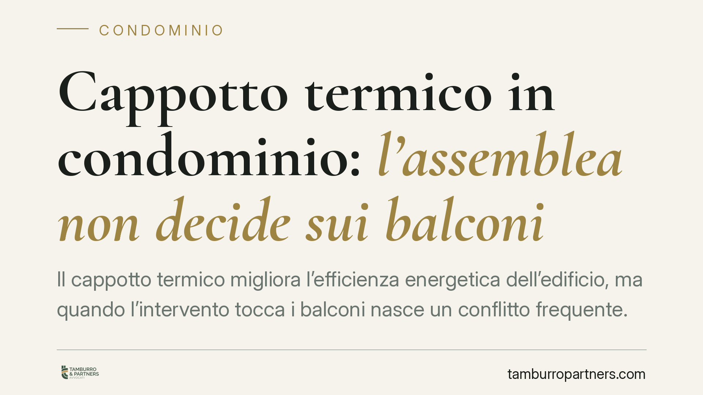

Cappotto termico in condominio: l'assemblea non decide sui balconi
Il cappotto termico migliora l'efficienza energetica dell'edificio, ma quando l'intervento tocca i balconi nasce un conflitto frequente. La giurisprudenza recente ribadisce un principio netto: l'assemblea non ha potere sulle parti di proprietà esclusiva. Le delibere che vi incidono senza il consenso del proprietario sono nulle. Vediamo cosa significa in pratica per condòmini e amministratori.

Il caso e perché conta
L'installazione del cappotto termico è uno degli interventi più diffusi degli ultimi anni, anche sulla spinta degli incentivi fiscali. Quando il rivestimento isolante corre lungo la facciata, può interessare anche i balconi: frontalini, parapetti, superfici laterali. Qui si apre il problema.
L'assemblea può imporre modifiche ai balconi dei singoli? La risposta giurisprudenziale è no. Lo confermano il Tribunale di Roma (sent. n. 17997/2020) e, più di recente, la Cassazione con le sentenze n. 5528/2025 e n. 25192/2025. L'assemblea non può deliberare su beni che non le appartengono.
Inquadramento normativo
Il punto di partenza è la distinzione tra parti comuni e parti di proprietà esclusiva. L'art. 1117 del Codice civile elenca i beni comuni (muri maestri, facciate nel loro insieme, impianti condivisi). I balconi, invece — nella loro parte "aggettante", cioè quella che sporge dalla facciata — sono di norma di proprietà esclusiva del titolare dell'appartamento servito.
Il potere deliberativo dell'assemblea, disciplinato dall'art. 1135 c.c., si esercita sulla gestione delle cose comuni. Gli artt. 1120 e 1121 c.c. regolano le innovazioni, ma sempre sulle parti comuni. L'art. 1122-bis c.c. detta regole per gli impianti su beni individuali, e l'art. 1102 c.c. fissa i limiti all'uso della cosa comune da parte del singolo.
Il nodo è questo: un'innovazione come il cappotto termico può essere deliberata a maggioranza qualificata per le parti comuni (facciata, muri perimetrali). Ma nel momento in cui l'intervento modifica il balcone di proprietà esclusiva — ne altera l'aspetto, ne riduce la superficie calpestabile, ne cambia la struttura — l'assemblea esce dal perimetro dei propri poteri.
Cosa dice la giurisprudenza
Le pronunce richiamate convergono su un orientamento ormai consolidato. Una delibera che dispone lavori su parti di proprietà esclusiva, senza il consenso del titolare, non è semplicemente annullabile: è nulla. La differenza è sostanziale.
La delibera annullabile va impugnata entro trenta giorni, pena la sua definitiva efficacia (art. 1137 c.c.). La delibera nulla, invece, non produce effetti fin dall'origine e può essere fatta valere da chiunque vi abbia interesse, senza vincoli di termine. Il proprietario del balcone, quindi, conserva la sua tutela anche a distanza di tempo.
La ragione è logica prima che giuridica: l'assemblea è l'organo di governo del condominio, non del patrimonio individuale dei singoli. Nessuna maggioranza, per quanto ampia, può disporre di un bene altrui.
Implicazioni pratiche
Per il proprietario del balcone, significa che nessun intervento sul suo bene può essere imposto senza il suo assenso. Può legittimamente opporsi e, se i lavori sono già deliberati, far valere la nullità.
Per l'amministratore e per la maggioranza che intende procedere, il messaggio è di cautela. Avviare lavori su balconi privati sulla base di una delibera nulla espone a contenzioso, a richieste di ripristino e a responsabilità per i danni.
Resta un equilibrio delicato. Il condominio ha un interesse reale all'efficientamento complessivo dell'edificio; il singolo ha diritto a non subire modifiche imposte sul proprio bene. La soluzione passa quasi sempre dal dialogo e dall'acquisizione formale dei consensi individuali, prima dell'apertura del cantiere.
Cosa fare in concreto
- Verificate la natura del bene: prima di deliberare, individuate con precisione quali parti dell'intervento ricadono sulla facciata comune e quali sui balconi di proprietà esclusiva.
- Raccogliete i consensi individuali per iscritto da ciascun proprietario interessato dai lavori sul proprio balcone, prima dell'inizio dei lavori.
- Se siete proprietari contrari, valutate l'impugnazione: ricordate che la delibera nulla non è soggetta al termine di trenta giorni, ma agire tempestivamente evita lavori già eseguiti.
- Fate verbalizzare con chiarezza l'oggetto della delibera, distinguendo parti comuni e parti private, per evitare ambiguità future.
- Richiedete un'analisi tecnica e legale preventiva sul progetto, così da escludere interventi su beni individuali non autorizzati.
---
*Contributo informativo a cura di Tamburro & Partners - Avv. Giuseppe Tamburro. Non costituisce parere legale.*
Ogni condominio ha una storia a sé.
Se gestisci un'amministrazione e vuoi un confronto su una specifica questione condominiale, scrivi allo studio. Ti rispondiamo entro un giorno lavorativo.